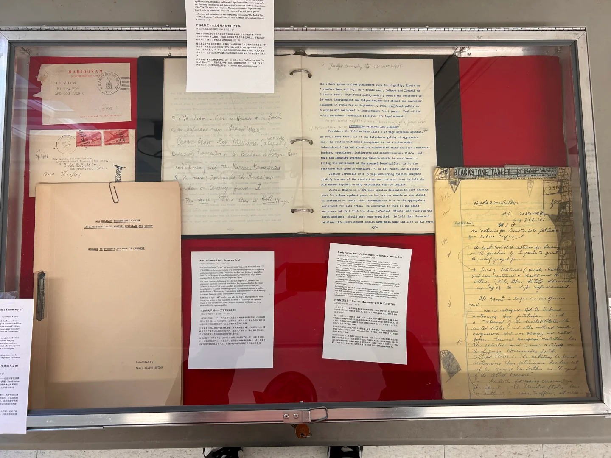
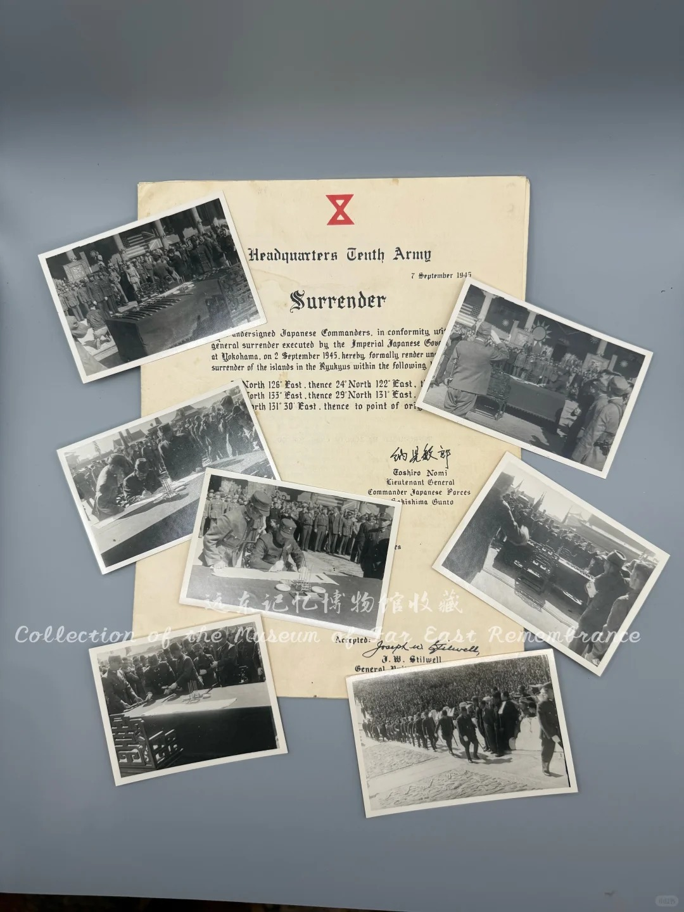

Photo gallery
Browse exhibition posters, historical materials and visits to the museum. Choose a group, then select an image to view it in full.
View galleryModern China and the wider world, through original objects.
Photographs, letters and posters connect late Qing and Republican China, the Second World War in Asia, and postwar justice. Other holdings trace Chinese lives and culture across the Pacific.
Based in Canada, MOFER collects, digitizes, studies, and shares the history of the Far East through exhibitions and education.
About the museumThree objects, three ways into the past.
The Tokyo Trial, 2026
Atrocities, Evidence, Justice
Original documents and objects place the Tokyo Trial in the aftermath of the Second World War in Asia, marking 80 years since the tribunal opened in 1946.


Past exhibition
Our first independently curated exhibition ran at Boynton House in Richmond Hill, Ontario, Canada, from September 9 to 14, 2025, marking 80 years since the end of the Second World War.
Boynton House, Richmond Hill
More than 100 original photographs, documents, books, periodicals, and objects were shown, many for the first time in North America. Three sections shaped the exhibition: International Support and Cooperation, China Fights Back, and Victory.
1300 Elgin Mills Road East, Richmond Hill
Browse exhibition posters, historical materials and visits to the museum. Choose a group, then select an image to view it in full.
View galleryFor exhibition proposals, collection questions and collaboration.
Get in touch